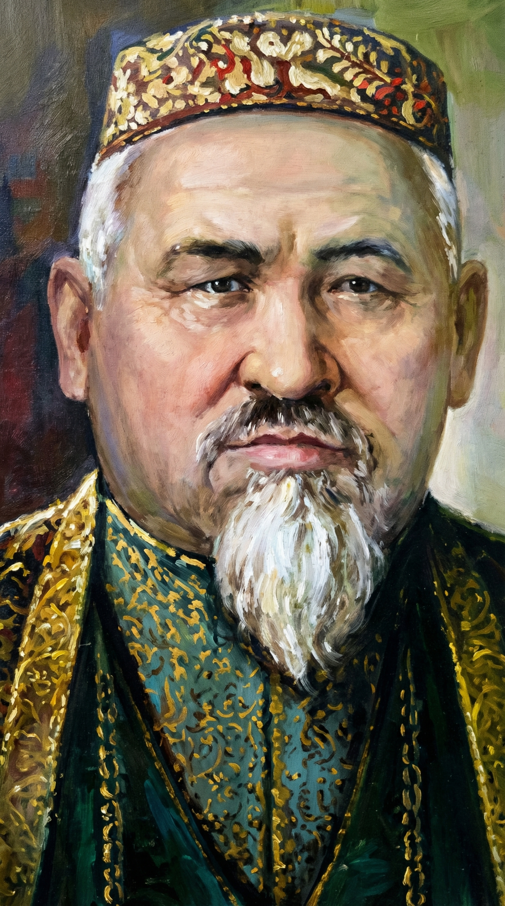

Дала Данагөйі

«Өзімдікі дейтін өмірім жоқ, халқымдыкі»
Мәшһүр Жүсіп Көпейұлы
(1858 – 1931)
Азан шақырып қойған есімі — Адам Жүсіп. Ол қазақтың аса көрнекті ойшылы, фольклортанушысы, этнографы және әулиесі. Оның «Мәшһүр» (арабшадан аударғанда — атақты, белгілі) атануының өзіндік тарихы бар. 9 жасында халық алдында қисса-дастандарды жатқа айтып, жұртты тамсантқан балаға белгілі би Мұса Шорманұлы риза болып: «Бұл өзі мәшһүр бала екен!» — деп батасын берген екен.
Ол араб, парсы, шағатай тілдерін жетік меңгеріп, Бұхара мен Ташкенттегі жоғары діни оқу орындарында білім алды. Бірақ ол тек дінмен шектелмей, бүкіл ғұмырын қазақ халқының жоғалып бара жатқан ауыз әдебиеті үлгілерін, шежірелерін және тарихи мұраларын қағазға түсіруге арнады.
Көріпкелдік қасиеті мен әулиелігі
Мәшһүр Жүсіптің тағы бір ерекшелігі — оның сәуегейлігі мен әулиелігі. Ол өзінің қай күни, қай жылы дүниеден өтетінін бір жыл бұрын дәл болжап білген. Тіпті көзі тірісінде өзіне арнап зират (мәшайық) соқтырып, жаназасын өзіне-өзі оқытқан адам ретінде тарихта қалды. Ол 73 жасында, өзі айтқандай, 1931 жылы күзде дүниеден озды.
Өмір белестері
Баянауыл өңірінде, Қызылтау бөктеріндегі Найзатас деген жерде (қазіргі Павлодар облысы, Мәшһүр Жүсіп ауылы) дүниеге келді.
Халық оның талантына тәнті болып, Мұса Шорманұлының батасымен «Мәшһүр» (атақты) деген лақап атқа ие болды.
Қамариддин хазіреттен сауат ашып, кейін Бұхара, Ташкент, Түркістан қалаларындағы медреселерде терең білім алды.
Сарыарқа, Жетісу, Оңтүстік Қазақстан өңірлерін жаяу аралап, ауыз әдебиеті мұраларын, шежірелер мен айтыстарды хатқа түсіре бастады.
Қазан қаласында Құсайын Асайыновтың баспасынан ақынның алғашқы кітаптары: «Хал-ахуал», «Сарыарқаның кімдікі екендігі», «Тірлікте көп жасағандықтан көрген бір тамашамыз» жарық көрді.
73 жасында дүниеден озды. Өз қабірін тірі кезінде дайындатып, ескерткіш орнаттырған. Қазіргі таңда оның кесенесі үлкен зиярат орнына айналған.